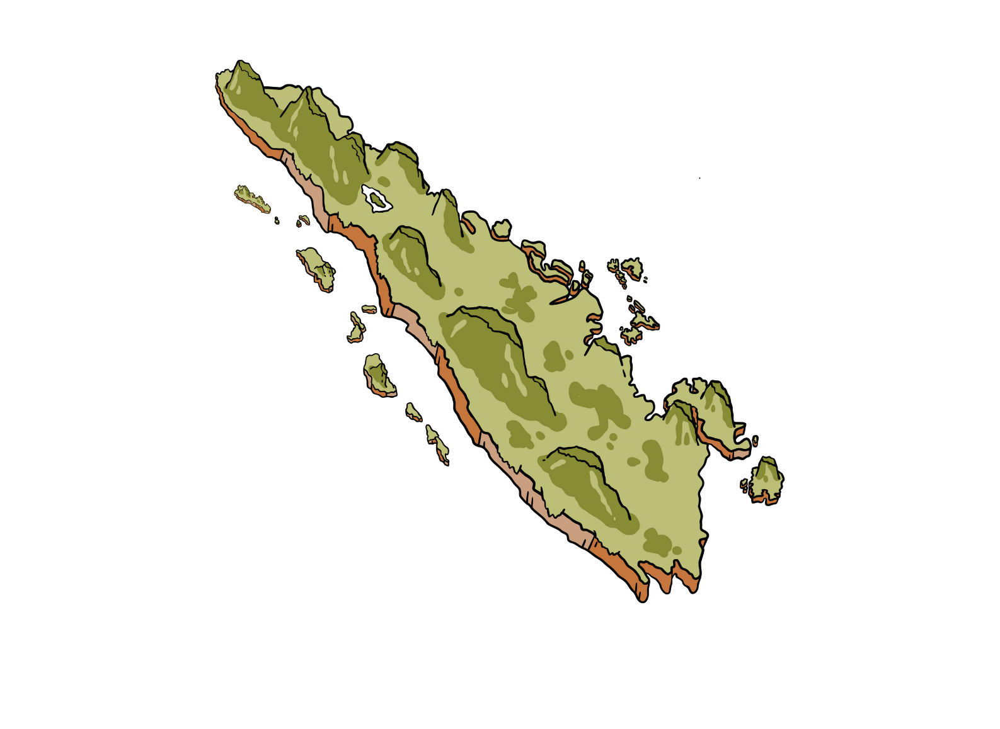
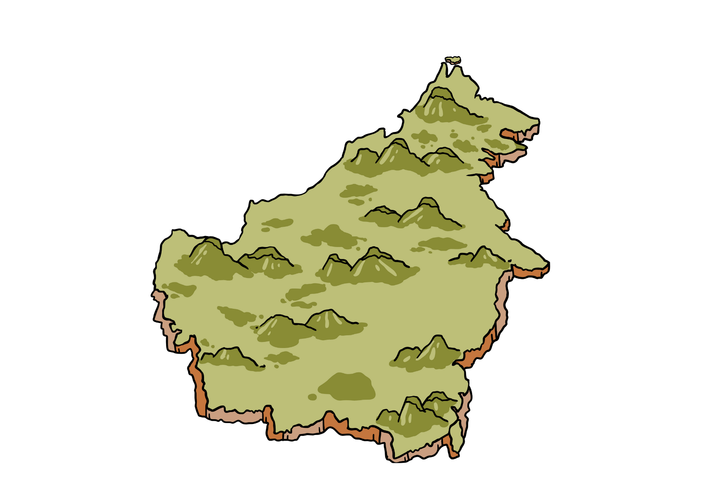

Sorotan Pulau
Klik salah satu kartu untuk melihat ringkasan singkat.

Sumatra
Pulau Sumatra adalah salah satu pulau terbesar di Indonesia dengan bentang alam yang beragam.
Lihat Detail

Kalimantan
Pulau Kalimantan dikenal dengan hutan hujan tropis yang luas dan sungai-sungai besar.
Lihat Detail